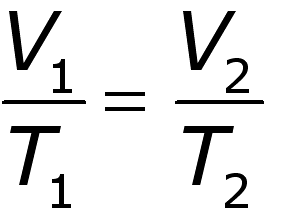

Ley de Charles
Describe las transformaciones que presenta un gas cuando La presion es constante.
En esta ley, Jacques Charles dice que para una cierta cantidad de gas a una presión
constante, al aumentar la temperatura, el volumen del gas aumenta y al disminuir la
temperatura, el volumen del gas disminuye.
